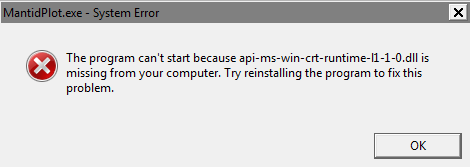

Sample datasets
Sample datasets for use in Mantid:
View changes made in this release.
Installation instructions:
Windows 7 users: if you see the following error:
your machine has not had recent Windows updates applied. Please either update Windows or install KB2999226 standalone.
Alternative downloads:
Previous releasesSample datasets for use in Mantid:
Help documentation and examples can be found here
The IPython notebook is not officially supported for use with Mantid, but an example notebook is provided below.
Nightly development build – minimally tested and not recommended for general use.
Download Mantid forView changes in this build in the recent news.
Alternative downloads:
Previous nightly builds can be found here.